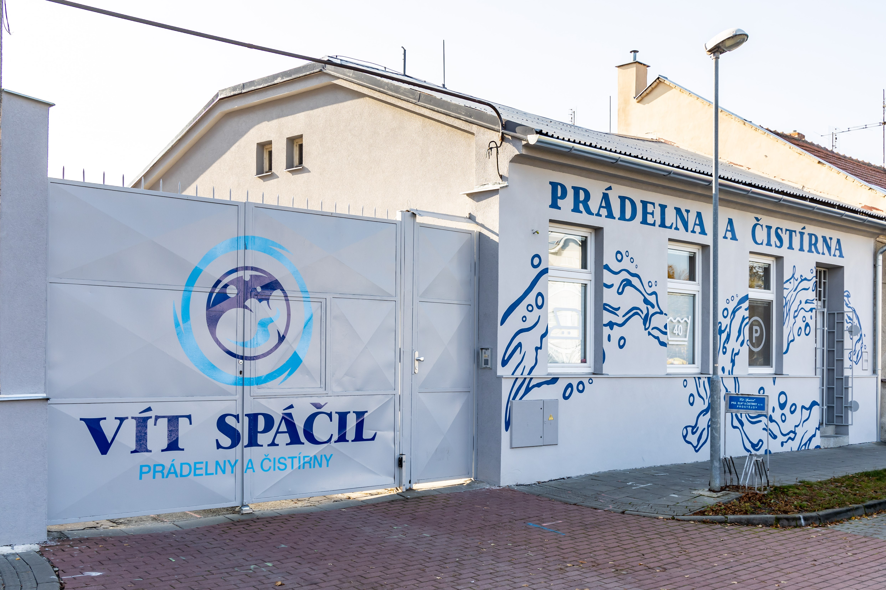

📍 Prostějov
🏛️ Tradice od roku 1954
📸 29 autentických fotografií v databázi
Vít Spáčil - prádelny a čistírny, spol. s r.o.
Kvalitní a ekologické praní prádla pro nemocnice, hotely, restaurace, firmy i veřejnost s certifikací kvality QZ a špičkovými linkami Jensen a Kannegiesser
1954
Založení v Prostějově (od r. 1993 dědici)
QZ & TZÚ
Certifikace zdravotnictví, hotely a gastro
Jensen & Kannegiesser
Vysokokapacitní průmyslové žehlicí linky
29 fotek
Autentická fotodokumentace provozu v Prostějově

Areál a historická brána prádelny Vít Spáčil – Prostějov
Technologie prádelny

Expedice čistého a zabaleného prádla
Logistika a vozový park

Certifikát TZÚ – Praní hotelového prádla (OS 80)
Certifikáty kvality